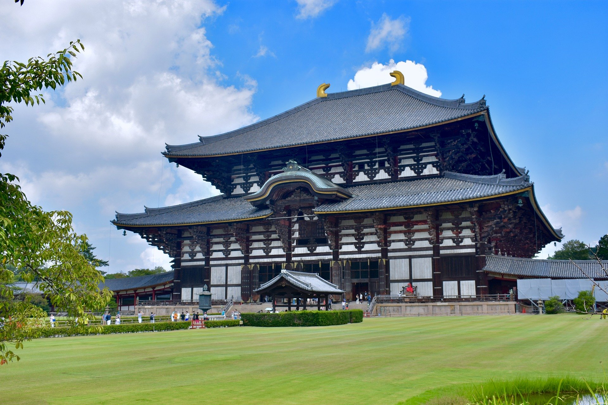

USJ
USJの楽しみ方＆回り方紹介！初心者でもおすすめのアトラクションの攻略法は？

営業時間
9:00～17:00（最終入館は16:30、季節により開館時間延長あり
休日
年末年始(12/28～1/1)
開業以来、エリアやアトラクションが増えたUSJで、楽しみ方＆回り方を知っていると断然有利。絶対乗りたいアトラクションや待ち時間の短縮方法、効率良くまわれるサービス等、USJの楽しみ方＆回り方を紹介！初心者でも分かり易いアトラクションの攻略法を紹介していきます。
住所
〒 540-0002 大阪市中央区大阪城1-1
アクセス
Osaka Metro谷町線：谷町四丁目駅（1-B出口）、天満橋駅（3番出口）
Osaka Metro中央線：谷町四丁目駅（9番出口）、森ノ宮駅（1、3-B出口）
Osaka Metro長堀鶴見緑地線：大阪ビジネスパーク駅（1番出口）、森ノ宮駅（3-B出口）
JR大阪環状線：大阪城公園駅、森ノ宮駅
JR東西線：大阪城北詰駅
京阪電車：天満橋駅、京橋駅
大阪シティバス：大阪城大手前、馬場町
大阪水上バス：大阪城港、八軒家浜船着場
※いずれの駅からも徒歩約15分～20分
料金
大人600円/中学生以下、大阪市内在住65歳以上の方（要身分証明書）、障害者手帳等お持ちの方は無料
所要時間
約60分
電話番号
06-6941-3044
Fax
06-6941-2197
見学案内
音声ガイド貸出あり
周辺観光施設

周辺飲食



周辺ホテル